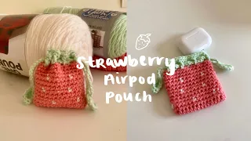
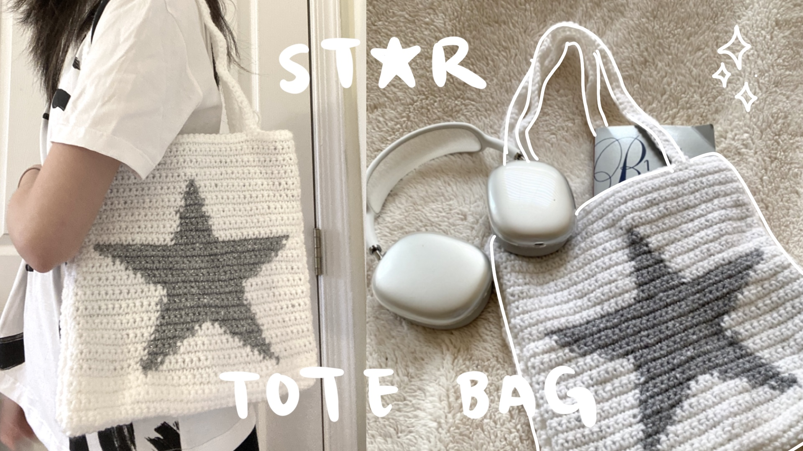
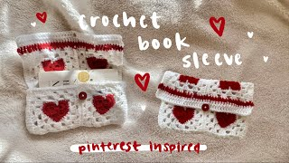
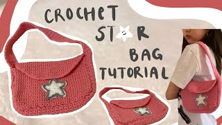
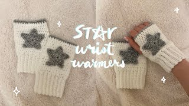

🧶 My Crochet Patterns
Click on a design to view the full tutorial & pattern.

Strawberry Airpods Pouch
The perfect everyday tote bag for essentials. Learn how to crochet a grid pattern using the tapestry method.

Star Tote Bag
The perfect everyday tote bag for essentials. Learn how to crochet a grid pattern using the tapestry method.

Heart Book sleeve
A pinterest-inspired book sleeve to carry books, belongings, etc! Makes the cutest gift and a quick, easy project.

Star Purse/Messenger Bag
The cutest crochet purse/messenger bag with star detailing. Perfect for carrying daily essentials and begineer-friendly!

Star Wrist Warmers
Beginner-friendly tutorial for cozy wrist warmers/fingerless gloves with a star detailing.